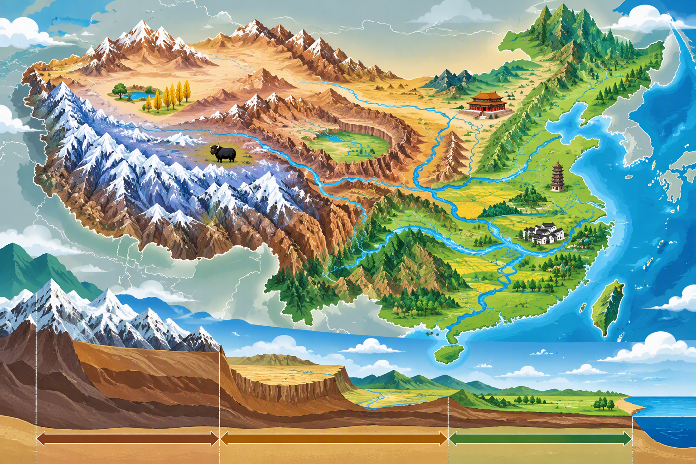

章節導讀
先閱讀課文講解與圖片，再從本章30題題庫隨機抽10題檢核。重新測驗會重新抽題。
圖片解說

觀察圖中的位置、人物、建築與制度線索，再與下方課文概念連結。
課文解說 1
緯度影響南北溫度，距海遠近影響東西降水。
課文解說 2
冬季風寒冷乾燥，夏季風溫暖溼潤。
課文解說 3
秦嶺淮河是東部重要南北氣候與農業分界。
本章隨機10題
題庫30題，每次抽10個不同核心概念，選項也會重新排列。
課文圖解＋隨機章節測驗
先閱讀課文講解與圖片，再從本章30題題庫隨機抽10題檢核。重新測驗會重新抽題。

觀察圖中的位置、人物、建築與制度線索，再與下方課文概念連結。
緯度影響南北溫度，距海遠近影響東西降水。
冬季風寒冷乾燥，夏季風溫暖溼潤。
秦嶺淮河是東部重要南北氣候與農業分界。
題庫30題，每次抽10個不同核心概念，選項也會重新排列。